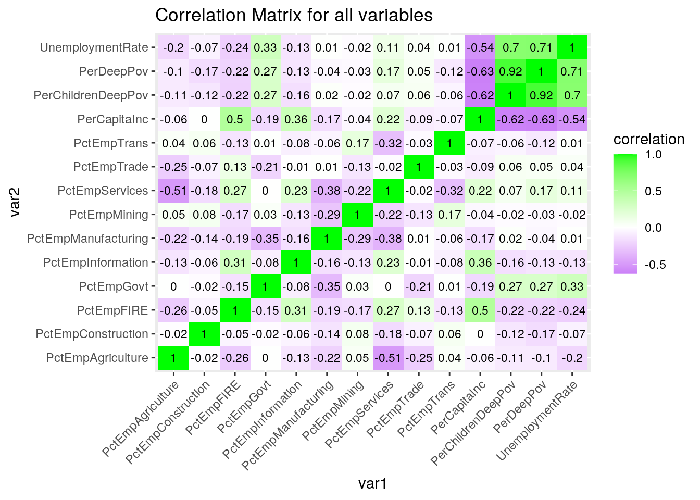
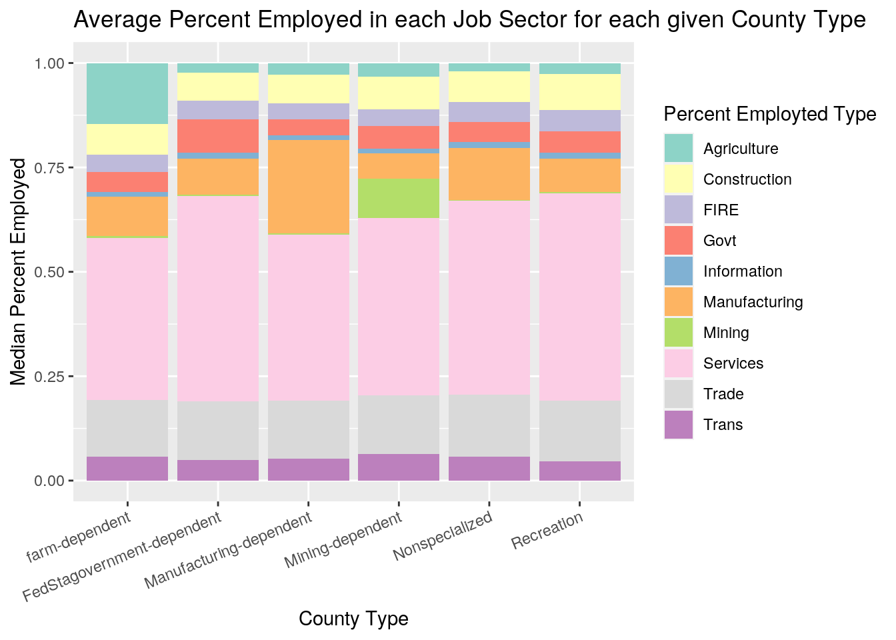
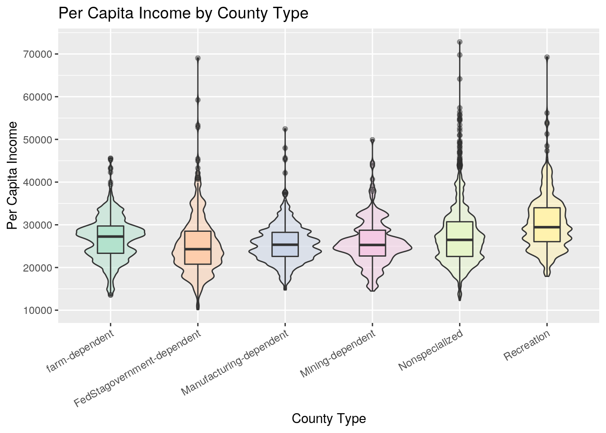
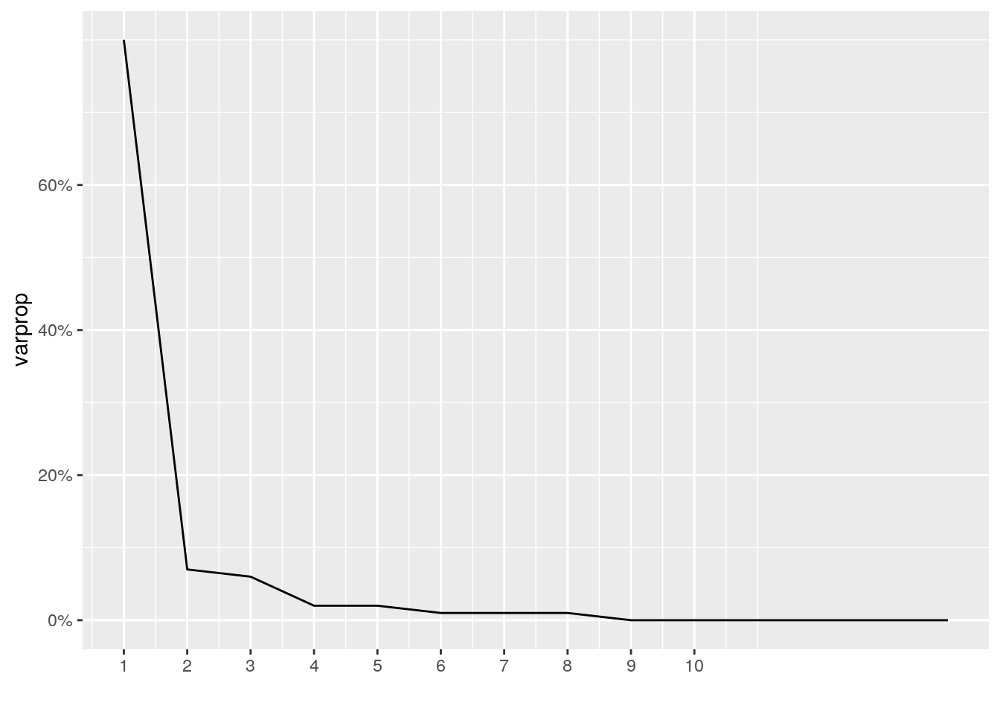
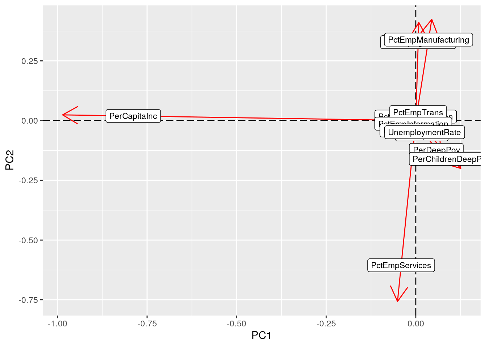
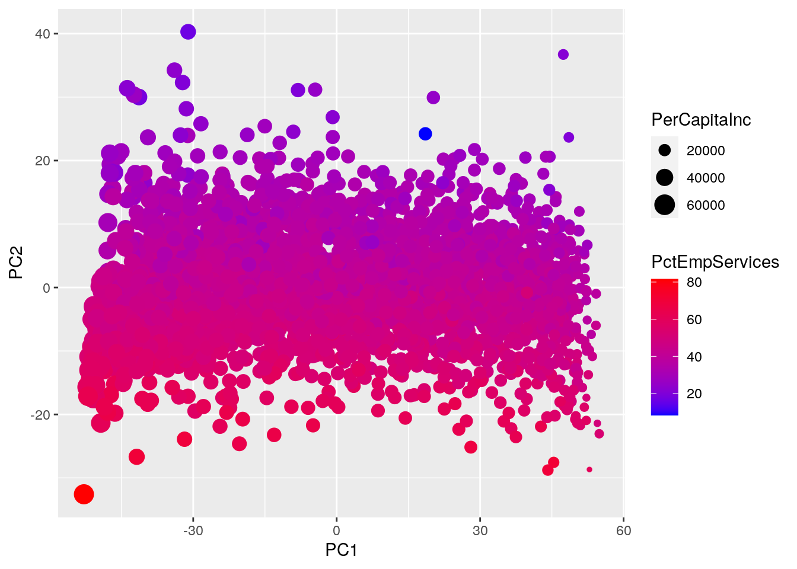
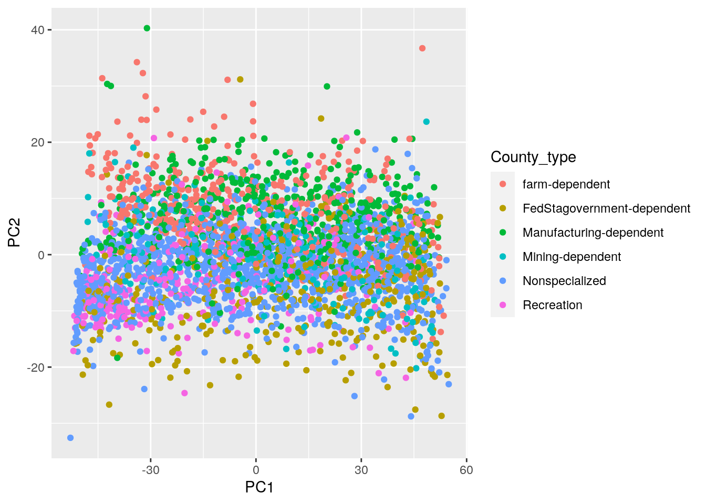
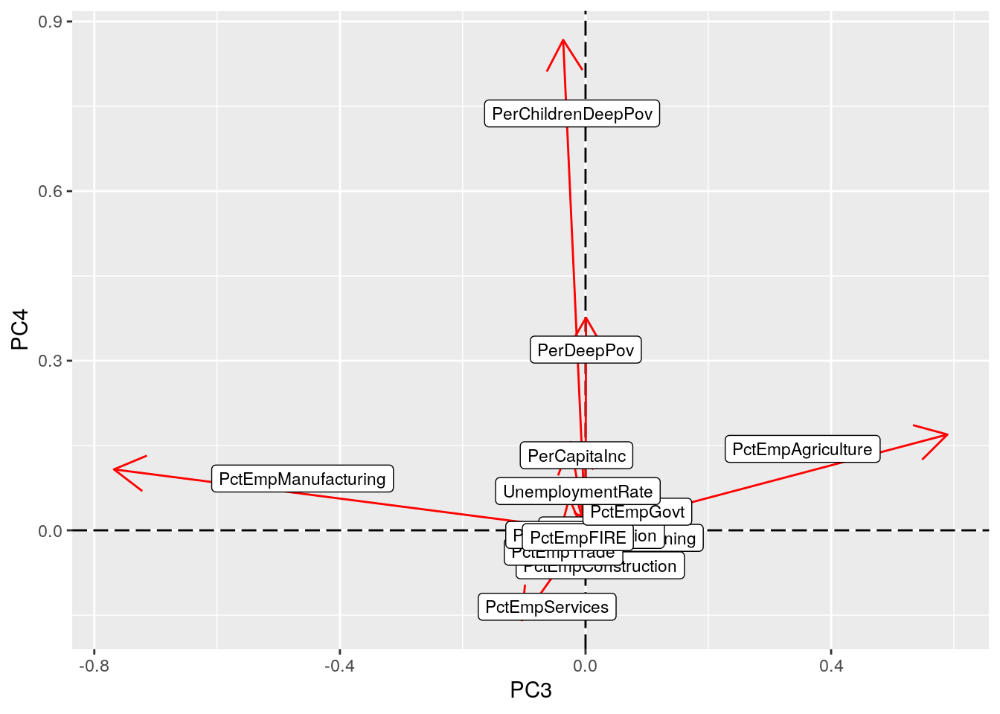
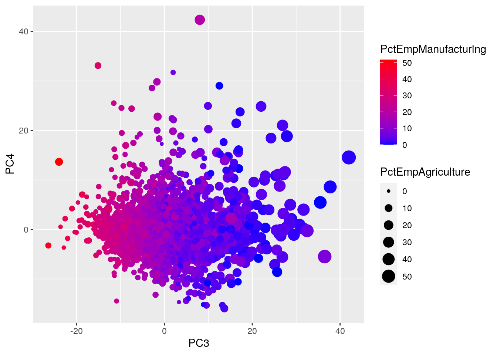

The data used in this project was collected from the USDA’s Atlas of Rural and Small-Town America. Located at: https://www.ers.usda.gov/data-products/atlas-of-rural-and-small-town-america/
These datasets were interesting to me as they contained data for the entire nation, but each observation was a small local. So this dataset gives a good representation of the country by area, population was not accounted for in this project, and had unique county classifications and employment measurments that sparked my curiosity. The other variables I acquired from these datasets were of poverty and income, as I was curious if they were correlated with a certain type of employment in a job sector.
library(tidyverse)jobs <- read_csv("Jobs.csv")
county <- read_csv("County Classifications.csv")
income <- read_csv("Income.csv")county2 <- county %>% select(FIPS = FIPStxt, State, County, Type_2015_Update) %>%
mutate(type = as.factor(Type_2015_Update)) %>% mutate(County_type = recode(Type_2015_Update,
`0` = "Nonspecialized", `1` = "farm-dependent", `2` = "Mining-dependent",
`3` = "Manufacturing-dependent", `4` = "FedStagovernment-dependent",
`5` = "Recreation")) %>% select(-Type_2015_Update) %>% mutate(County_type = as.factor(County_type))The county dataset provided a classification system of US counties with measures(from 2015) of earnings and employment to create county types. I then recoded the discrete numeric values into a readable catagorical variable.
jobs2 <- jobs %>% select(FIPS, State, County, contains("UnempRate"),
contains("PctEmp"), -contains("PctEmpChange")) %>% mutate(UnemploymentRate = (UnempRate2018 +
UnempRate2017 + UnempRate2016 + UnempRate2015 + UnempRate2014)/5) %>%
select(-contains("20"))The jobs dataset provided, for each county/FIPS code, a percent of the civilian labor force 16 and over employed in a given job sector as a multiyear average from 2014 to 2018. The dataset also provided yearly unemployment rates over 2014-2018. I created a variable as the multiyear average of unemployment rate from 2014-2018.
From the documation of the data the catagorical Job Sectors are as follows
| Job Sector Abbreviation | Meaning |
|---|---|
| Agriculture | agriculture, forestry, fishing, and hunting |
| Mining | mining, quarrying, oil and gas extraction |
| Construction | Construction |
| Manufacturing | Manufacturing |
| Trade | wholesale and retail trade |
| Trans | transportation, warehousing and utilities |
| Information | information |
| FIRE | finance and insurance, and real estate and rental and leasing |
| Services | services |
| Govt | public administration |
income2 <- income %>% select(FIPS, State, County, PerCapitaInc,
PerDeepPov = Deep_Pov_All, PerChildrenDeepPov = Deep_Pov_Children)The income dataset provided, for each county/FIPS code, Per Capita Income, Deep Poverty, and Deep Child Poverty over the same multiyear average (2014 to 2018).
jobs2_tidy <- jobs2 %>% pivot_longer(4:13, names_to = "PctEmployed_TYPE",
values_to = "PercentEmployed") %>% separate(PctEmployed_TYPE,
into = c("rm", "PctEmployed_TYPE"), sep = 6) %>% select(-rm) %>%
mutate(PctEmployed_TYPE = as.factor(PctEmployed_TYPE))jobs was in a wide format for percent employed in each job sector. So, a pivot_longer() was done to create a catagorical variable for the type of percent emplyed in each sector. This was saved as a seperate value so that analysis can be done with either format.
jobs2_tidy %>% select(FIPS, State, County) %>% summarise_all(n_distinct)## # A tibble: 1 x 3
## FIPS State County
## <int> <int> <int>
## 1 3278 53 1947county2 %>% select(FIPS, State, County) %>% summarise_all(n_distinct)## # A tibble: 1 x 3
## FIPS State County
## <int> <int> <int>
## 1 3225 52 1913income2 %>% select(FIPS, State, County) %>% summarise_all(n_distinct)## # A tibble: 1 x 3
## FIPS State County
## <int> <int> <int>
## 1 3278 53 1947anti_join(jobs2_tidy, county2, by = "FIPS") %>% group_by(FIPS) %>%
slice(0:1)## # A tibble: 53 x 6
## # Groups: FIPS [53]
## FIPS State County UnemploymentRate PctEmployed_TYPE PercentEmployed
## <chr> <chr> <chr> <dbl> <fct> <dbl>
## 1 00000 US United States 4.94 Agriculture 1.28
## 2 01000 AL Alabama 5.4 Agriculture 1.07
## 3 02000 AK Alaska 6.74 Agriculture 1.76
## 4 04000 AZ Arizona 5.58 Agriculture 0.942
## 5 05000 AR Arkansas 4.46 Agriculture 2.42
## 6 06000 CA California 5.66 Agriculture 2.13
## 7 08000 CO Colorado 3.64 Agriculture 1.15
## 8 09000 CT Connecticut 5.24 Agriculture 0.349
## 9 10000 DE Delaware 4.68 Agriculture 0.967
## 10 11000 DC District of Co… 6.52 Agriculture 0.109
## # … with 43 more rowsanti_join(income2, county2, by = "FIPS") %>% group_by(FIPS) %>%
slice(0:1)## # A tibble: 53 x 6
## # Groups: FIPS [53]
## FIPS State County PerCapitaInc PerDeepPov PerChildrenDeepPov
## <chr> <chr> <chr> <dbl> <dbl> <dbl>
## 1 00000 US United States 32621 6.25 8.60
## 2 01000 AL Alabama 26846 7.61 11.6
## 3 02000 AK Alaska 35874 4.94 6.31
## 4 04000 AZ Arizona 29265 7.50 10.2
## 5 05000 AR Arkansas 25635 7.25 10.3
## 6 06000 CA California 35021 6.25 8.04
## 7 08000 CO Colorado 36415 4.97 5.75
## 8 09000 CT Connecticut 43056 4.67 6.29
## 9 10000 DE Delaware 33989 5.44 6.97
## 10 11000 DC District of Columbia 53321 9.20 13.6
## # … with 43 more rowsThe county dataset is the only dataset missing observations (53) which are for the state/federal cumulative statistics.
jobs2_tidy %>% filter(!complete.cases(jobs2_tidy)) %>% group_by(FIPS) %>%
slice(0:1)## # A tibble: 7 x 6
## # Groups: FIPS [7]
## FIPS State County UnemploymentRate PctEmployed_TYPE PercentEmployed
## <chr> <chr> <chr> <dbl> <fct> <dbl>
## 1 02010 AK Aleutian Islands NA Agriculture NA
## 2 02201 AK Prince of Wales… NA Agriculture NA
## 3 02232 AK Skagway-Hoonah-… NA Agriculture NA
## 4 02280 AK Wrangell-Peters… NA Agriculture NA
## 5 15005 HI Kalawao NA Agriculture 1.75
## 6 35039 NM Rio Arriba 7.1 Agriculture NA
## 7 51515 VA Bedford NA Agriculture NAcounty2 %>% filter(!complete.cases(county2)) %>% group_by(FIPS) %>%
slice(0:1)## # A tibble: 82 x 5
## # Groups: FIPS [82]
## FIPS State County type County_type
## <chr> <chr> <chr> <fct> <fct>
## 1 02010 AK Aleutian Islands <NA> <NA>
## 2 02201 AK Prince of Wales-Outer Ketchikan <NA> <NA>
## 3 02232 AK Skagway-Hoonah-Angoon <NA> <NA>
## 4 02280 AK Wrangell-Petersburg <NA> <NA>
## 5 72001 PR Adjuntas <NA> <NA>
## 6 72003 PR Aguada <NA> <NA>
## 7 72005 PR Aguadilla <NA> <NA>
## 8 72007 PR Aguas Buenas <NA> <NA>
## 9 72009 PR Aibonito <NA> <NA>
## 10 72011 PR Añasco <NA> <NA>
## # … with 72 more rowsincome2 %>% filter(!complete.cases(income2)) %>% group_by(FIPS) %>%
slice(0:1)## # A tibble: 7 x 6
## # Groups: FIPS [7]
## FIPS State County PerCapitaInc PerDeepPov PerChildrenDeepP…
## <chr> <chr> <chr> <dbl> <dbl> <dbl>
## 1 02010 AK Aleutian Islands NA NA NA
## 2 02201 AK Prince of Wales-Outer K… NA NA NA
## 3 02232 AK Skagway-Hoonah-Angoon NA NA NA
## 4 02280 AK Wrangell-Petersburg NA NA NA
## 5 15005 HI Kalawao 47709 9.09 NA
## 6 35039 NM Rio Arriba NA NA NA
## 7 51515 VA Bedford NA NA NAThere are 6 incomplete observations in jobs. 4 are in AK, 1 in NM, 1 in VA. These 6 observations are also missing from income. In addition to the priorly mentioned 6 missing observations in income, there is also 1 in HI that is missing. The 4 observations in AK that are missing from the prior 2 datasets are also missing for county, but county is also missing all the observations for PR.
data <- county2 %>% full_join(jobs2, by = c("FIPS", "State",
"County")) %>% full_join(income2, by = c("FIPS", "State",
"County"))
datatidy <- county2 %>% full_join(jobs2_tidy, by = c("FIPS",
"State", "County")) %>% full_join(income2, by = c("FIPS",
"State", "County"))A full join by the county’s FIPS code was picked to preserve all the available data.
data %>% na.omit() %>% mutate(pct_tot = (PctEmpAgriculture +
PctEmpMining + PctEmpConstruction + PctEmpManufacturing +
PctEmpTrade + PctEmpTrans + PctEmpInformation + PctEmpFIRE +
PctEmpServices + PctEmpGovt)) %>% select(FIPS, pct_tot) %>%
mutate(is100 = (round(pct_tot, 5) == 100)) %>% summarise(sum_to_100 = sum(is100),
unequal_to_100 = sum(!is100))## # A tibble: 1 x 2
## sum_to_100 unequal_to_100
## <int> <int>
## 1 3140 0For the complete observations, the percent employed for each job sector sums to 100
data %>% na.omit %>% group_by(State, County_type) %>% count() %>%
group_by(State) %>% mutate(MajorityOfCountiesType = County_type,
totalCountiesInState = sum(n), majority_county_count = n) %>%
select(-n, -County_type) %>% group_by(State) %>% filter(majority_county_count ==
max(majority_county_count)) %>% mutate(percent_county_type = round(majority_county_count/totalCountiesInState,
4) * 100) %>% arrange(desc(percent_county_type))## # A tibble: 55 x 5
## # Groups: State [51]
## State MajorityOfCountie… totalCountiesInS… majority_county_… percent_county_…
## <chr> <fct> <int> <int> <dbl>
## 1 DC FedStagovernment-… 1 1 100
## 2 CT Nonspecialized 8 7 87.5
## 3 NJ Nonspecialized 21 16 76.2
## 4 ND farm-dependent 53 35 66.0
## 5 MA Nonspecialized 14 9 64.3
## 6 NE farm-dependent 93 58 62.4
## 7 SD farm-dependent 66 41 62.1
## 8 MS Nonspecialized 82 50 61.0
## 9 RI Nonspecialized 5 3 60
## 10 VT Recreation 14 8 57.1
## # … with 45 more rowsThe above table illustrates each state’s total number of counties, and the type of their most prevalent county, if there are ties for the majority then all of the top ranking for that state are present. The table is arranged by percent of the state’s counties that are of the given majority type. Most of the states have a majority type of Nonspecialized or Recreation. There are very few states that have a majority of their counties devoted to Mining, Manufacturing or Government. The larger states (the ones with the most counties) tend to be mostly Nonspecialized. One of the most interesting find in the table is that Hawaii has 4 counties, 2 are government and the other 2 are recreation, so all of Hawaii’s counties are present in the above table.
datatidy %>% na.omit() %>% select(-PercentEmployed) %>% summarise_if(is.numeric,
c(sd = "sd", mean = "mean", med = "median", max = "max",
min = "min")) %>% pivot_longer(1:20, values_to = "statistic") %>%
separate(name, into = c("Variable", "stat_type"), sep = "_") %>%
arrange(Variable)## # A tibble: 20 x 3
## Variable stat_type statistic
## <chr> <chr> <dbl>
## 1 PerCapitaInc sd 6502.
## 2 PerCapitaInc mean 27030.
## 3 PerCapitaInc med 26244.
## 4 PerCapitaInc max 72832
## 5 PerCapitaInc min 10148
## 6 PerChildrenDeepPov sd 5.99
## 7 PerChildrenDeepPov mean 9.55
## 8 PerChildrenDeepPov med 8.54
## 9 PerChildrenDeepPov max 50.5
## 10 PerChildrenDeepPov min 0
## 11 PerDeepPov sd 3.34
## 12 PerDeepPov mean 6.68
## 13 PerDeepPov med 6.09
## 14 PerDeepPov max 33.2
## 15 PerDeepPov min 0
## 16 UnemploymentRate sd 1.81
## 17 UnemploymentRate mean 5.15
## 18 UnemploymentRate med 4.92
## 19 UnemploymentRate max 22.2
## 20 UnemploymentRate min 1.76The above table depicts the standard deviation, mean, median, maximium, and minium for all nonEmployment variables. The Per Capita Income statistics show that the maximium value is about 7 standard deviations from the mean, while the minimum is only about 2.5 standard deviations below the mean which will be explored further in the data visualization section. Both Unemployment Rate and the two measures of poverty also have maximums greatly above the means, for their given standard deviations. Given this information and the relations of mean and median then it is reasonable to predict that these variables will be right skewed.
datatidy %>% na.omit() %>% select(FIPS, County, County_type,
PctEmployed_TYPE, PercentEmployed) %>% group_by(County_type,
PctEmployed_TYPE) %>% summarise_if(is.numeric, c(mean = "mean")) %>%
mutate(mean = round(mean, 2)) %>% pivot_wider(names_from = "PctEmployed_TYPE",
values_from = "mean") %>% glimpse()## Rows: 6
## Columns: 11
## Groups: County_type [6]
## $ County_type <fct> farm-dependent, FedStagovernment-dependent, Manufacturi…
## $ Agriculture <dbl> 15.18, 3.66, 3.41, 4.67, 3.10, 3.53
## $ Construction <dbl> 7.46, 6.65, 6.81, 7.82, 7.25, 8.72
## $ FIRE <dbl> 4.12, 4.40, 3.98, 3.66, 5.03, 4.98
## $ Govt <dbl> 5.26, 8.54, 4.33, 5.68, 5.21, 5.60
## $ Information <dbl> 1.25, 1.36, 1.19, 1.18, 1.49, 1.48
## $ Manufacturing <dbl> 9.56, 8.84, 21.95, 7.00, 12.39, 8.74
## $ Mining <dbl> 1.32, 1.15, 0.65, 10.20, 0.92, 0.76
## $ Services <dbl> 37.15, 47.20, 38.88, 40.27, 44.61, 47.44
## $ Trade <dbl> 12.89, 13.19, 13.44, 13.07, 14.28, 13.77
## $ Trans <dbl> 5.80, 5.00, 5.35, 6.45, 5.72, 4.99The above table illustrates the mean percentage employed in each job sector for each different county type. The Services sector appears to always have a large majority of the employment regardless of the county type. And, for some job sectors if they are of the similar/related to the county type they have a larger mean percent employed, for instance Agriculture has a higher value for the farm-dependent counties.
cormat <- data %>% select_if(is.numeric) %>% cor(use = "pair")
tidycor <- cormat %>% as.data.frame %>% rownames_to_column("var1") %>%
pivot_longer(-1, names_to = "var2", values_to = "correlation")
tidycor %>% ggplot(aes(var1, var2, fill = correlation)) + geom_tile() +
scale_fill_gradient2(low = "purple", mid = "white", high = "green") +
geom_text(aes(label = round(correlation, 2)), color = "black",
size = 3) + theme(axis.text.x = element_text(angle = 45,
hjust = 1)) + labs(title = "Correlation Matrix for all variables")
datatidy %>% filter(complete.cases(datatidy)) %>% ggplot(aes(x = County_type,
y = PercentEmployed, fill = PctEmployed_TYPE)) + labs(title = "Average Percent Employed in each Job Sector for each given County Type") +
geom_bar(stat = "summary", fun = "median", position = "fill") +
theme(axis.text.x = element_text(angle = 22.5, hjust = 1)) +
labs(fill = "Percent Employted Type") + ylab("Median Percent Employed") +
xlab("County Type") + scale_fill_brewer(palette = "Set3") The plot above illustrates median percentage employed in each job sector for each different county type, put on a scale out of 1. One of the first relationships to observe is that employment in the mining sector is typically very low across all the county types, the exception as expected is the Mining-Dependant counties. This same pattern occurs for the Agriculture job sector and the Farm-Dependent counties and with Manufacturing and Manufacturing-Dependant. The Trans, Trade, Govt, Information, FIRE, and Construction job sectors all appear to have a very similar employment rate across all the county types. The Services job sector takes a large portion of all employment in every county with some varience.
datatidy %>% na.omit() %>% ggplot(aes(x = County_type, y = PerCapitaInc,
fill = County_type)) + scale_fill_brewer(palette = "Pastel2") +
geom_violin(alpha = 0.5, adjust = 0.6) + geom_boxplot(width = 0.3,
outlier.alpha = 0.05) + theme(axis.text.x = element_text(angle = 30,
hjust = 1)) + theme(legend.position = "none") + scale_y_continuous(breaks = seq(0,
80000, 10000)) + xlab("County Type") + ylab("Per Capita Income") +
labs(title = "Per Capita Income by County Type") The plot above depicts the density of Counties’ Per Capita Income overlayed with a boxplot, separated by the county type. Each county type has outliers much larger than the mean, but it is most prevalent in the Federal/State Government, Nonspecialized, and Recreation County types. Both the Mining and Farm Dependent county types have larger densities around their means, compared to other groups where there is a more evenly distribution across the IQR.
pca_dat <- data %>% na.omit() %>% select(-(1:5)) %>% mutate(PerCapitaInc = (rank(PerCapitaInc)/length(PerCapitaInc)) *
100)All the selected variables are percentages, besides Per Capita Income. To put them on the same scale, Per Capita Income was given percentiles over the range 0 to 100.
data_pca <- pca_dat %>% princomp()
summary(data_pca)## Importance of components:
## Comp.1 Comp.2 Comp.3 Comp.4 Comp.5
## Standard deviation 29.2702350 8.56424651 7.68985909 4.99040321 4.32662727
## Proportion of Variance 0.8018153 0.06864363 0.05534249 0.02330737 0.01751947
## Cumulative Proportion 0.8018153 0.87045892 0.92580140 0.94910877 0.96662824
## Comp.6 Comp.7 Comp.8 Comp.9
## Standard deviation 3.121456421 3.021739991 2.397746391 2.012677740
## Proportion of Variance 0.009118774 0.008545473 0.005380571 0.003791145
## Cumulative Proportion 0.975747011 0.984292484 0.989673055 0.993464200
## Comp.10 Comp.11 Comp.12 Comp.13 Comp.14
## Standard deviation 1.693410754 1.343684508 1.311496455 0.7683802310 0
## Proportion of Variance 0.002683778 0.001689727 0.001609742 0.0005525534 0
## Cumulative Proportion 0.996147978 0.997837705 0.999447447 1.0000000000 1data_pca$loadings[0:13, 0:6]## Comp.1 Comp.2 Comp.3 Comp.4
## PctEmpAgriculture 0.0084901049 0.41057340 0.5894542455 0.1694774821
## PctEmpMining 0.0078914988 0.01657434 0.1517254324 -0.0156807576
## PctEmpConstruction -0.0003991241 0.02087666 0.0400933535 -0.0728817449
## PctEmpManufacturing 0.0445770916 0.42360350 -0.7680925585 0.1077846314
## PctEmpTrade 0.0012735157 -0.01910355 -0.0594706007 -0.0445961630
## PctEmpTrans 0.0081617573 0.04464634 0.0317068897 -0.0001245995
## PctEmpInformation -0.0088145759 -0.01627969 -0.0011945891 -0.0095683714
## PctEmpFIRE -0.0311941444 -0.05147966 -0.0208963852 -0.0141417086
## PctEmpServices -0.0510225697 -0.75682140 -0.1040274222 -0.1590286844
## PctEmpGovt 0.0210364458 -0.07258994 0.1407016346 0.0387599159
## UnemploymentRate 0.0308530498 -0.06082507 -0.0207126785 0.0817257961
## PerCapitaInc -0.9858236691 0.02397327 -0.0244387177 0.1562059416
## PerDeepPov 0.0715759748 -0.15342295 0.0008238906 0.3760549834
## Comp.5 Comp.6
## PctEmpAgriculture 0.56372441 0.108194110
## PctEmpMining -0.54496989 0.502445234
## PctEmpConstruction -0.17916413 -0.080287533
## PctEmpManufacturing 0.22838907 -0.002188520
## PctEmpTrade -0.12372519 0.192630338
## PctEmpTrans -0.18412846 -0.020448124
## PctEmpInformation 0.00743952 -0.008152730
## PctEmpFIRE -0.02103559 -0.001692149
## PctEmpServices 0.44794824 0.123708173
## PctEmpGovt -0.19447797 -0.814208801
## UnemploymentRate -0.06038535 -0.090800922
## PerCapitaInc -0.02753944 -0.012631883
## PerDeepPov 0.03586557 0.063416993eigval <- data_pca$sdev^2
varprop = round(eigval/sum(eigval), 2)
ggplot() + geom_line(aes(y = varprop, x = 1:14), stat = "identity") +
xlab("") + scale_y_continuous(breaks = seq(0, 0.6, 0.2),
labels = scales::percent) + scale_x_continuous(breaks = 1:10) Based ont the PCA’s summary, the first 2 Principal Components together give >80% Proportion of Varience. Also illustrated above, the Scree Plot levels off after the second principal component. But, for exploratory purpouses PC3 and PC4 will be included in the rest of the analysis.
data_pca$loadings[1:14, 1:2] %>% as.data.frame %>% rownames_to_column %>%
ggplot() + geom_hline(aes(yintercept = 0), lty = 5) + geom_vline(aes(xintercept = 0),
lty = 5) + ylab("PC2") + xlab("PC1") + geom_segment(aes(x = 0,
y = 0, xend = Comp.1, yend = Comp.2), arrow = arrow(), col = "red") +
geom_label(aes(x = Comp.1 * 0.8, y = Comp.2 * 0.8, label = rowname),
size = 3) The loading plot illustrates the the contribution of each Variable to each Principal Component. The Per Capita Income variable is the main variable associated with PC1. Percent employed in Agriculture, Services, and Manufacturing were the major contributors for PC2.
PC_data <- data %>% na.omit() %>% mutate(PC1 = data_pca$scores[,
1], PC2 = data_pca$scores[, 2], PC3 = data_pca$scores[, 3],
PC4 = data_pca$scores[, 4])
ggplot(PC_data, aes(PC1, PC2)) + geom_point(aes(color = PctEmpServices,
size = PerCapitaInc)) + scale_color_continuous(low = "blue",
high = "red") The score plot above has Percent employed in the sevices sector (a main contributing facor in PC2) mapped to color, and therefore the varience explained by variable is illustrated along the PC2 axis. This depiction was also applied to PC1 for the Per Captia Income was mapped to size. This plot is just a visual representation of the
ggplot(PC_data, aes(PC1, PC2)) + geom_point(aes(color = County_type)) These are the same points the score plot above, but it was colored by the County Type (which was not included in the PCA) to find if the PCA was able to discriminate between the different types. It was unable to perform a clear differentiation between catagories, as there is no grouping and all the catagories are overlapping with very similar centers.
data_pca$loadings[1:14, 3:4] %>% as.data.frame %>% rownames_to_column %>%
ggplot() + geom_hline(aes(yintercept = 0), lty = 5) + geom_vline(aes(xintercept = 0),
lty = 5) + ylab("PC4") + xlab("PC3") + geom_segment(aes(x = 0,
y = 0, xend = Comp.3, yend = Comp.4), arrow = arrow(), col = "red") +
geom_label(aes(x = Comp.3 * 0.6, y = Comp.4 * 0.85, label = rowname),
size = 3) This second loading plot illustrates the the next two Principal Components. The Pecerent Employed in Manufacturing and Agriculture are the main variables associated with PC3. Percent of Children in Deep Poverty and Percent of people in Deep Poverty were the major contributors for PC4.
ggplot(PC_data, aes(PC3, PC4)) + geom_point(aes(color = PctEmpManufacturing,
size = PctEmpAgriculture)) + scale_color_continuous(low = "blue",
high = "red") The score plot above has Percent employed in the Manufacturing sector (a main contributing facor in PC3) mapped to color, and therefore the varience explained by this variable is illustrated along the PC3 axis. This depiction was also applied for the other coontributing variable for PC3: the Percent employed in the Agriculture sector. This was mapped to size to be a visual representation of how the loading values apply to the PCA score plot.